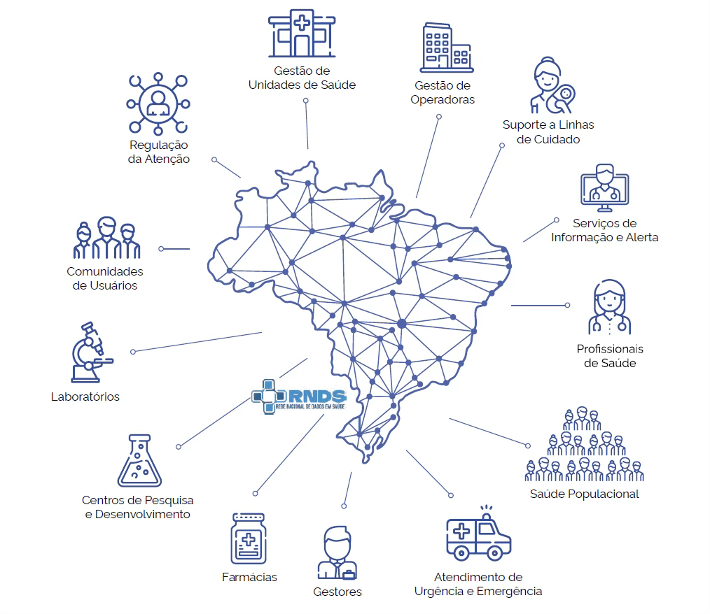

Módulo 4 | Aula 2
Integração de Dados em Saúde
Rede Nacional de Dados em Saúde (RNDS)
A RNDS é muito mais do que um sistema de informática, é a plataforma oficial de interoperabilidade do Ministério da Saúde, criada para conectar diferentes sistemas de saúde em todo o Brasil. Simplificando, pense nela como uma "ponte digital segura" que permite a hospitais, Unidades de Saúde da Família, laboratórios e outros serviços trocarem informações de saúde de forma padronizada, ágil e protegida.
Antes cada serviço de saúde operava como uma "ilha" de informações. Com a implementação da RNDS, é possível criar um "arquipélago conectado", por meio do qual os dados podem fluir de maneira organizada e segura. Isso significa que um exame realizado em um laboratório de Manaus pode ser acessado por um médico em Porto Alegre durante uma consulta, desde que o paciente autorize e todos os protocolos de segurança sejam seguidos.

O Decreto nº 12.560/2025 transformou a RNDS em uma política de Estado, consolidando seu papel como infraestrutura estratégica para a saúde digital brasileira. Isso significa que a RNDS deixou de ser um projeto temporário para se tornar uma plataforma permanente e essencial para o SUS.
A RNDS opera sob princípios descritos no Decreto nº 12.560/2025, que garantem sua funcionalidade, segurança e respeito ao cidadão.
Assim, esses princípios incluem:
Padrões técnicos comuns permitem que diferentes sistemas "conversem" entre si de forma estruturada e segura.
Proteção robusta contra acessos não autorizados, vazamentos ou alterações indevidas de dados, em estrito cumprimento da Lei Geral de Proteção de Dados Pessoais (LGPD).
O titular dos dados tem acesso e controle sobre suas informações de saúde, garantindo transparência e autonomia.
Clareza sobre como os dados são tratados, com uso ético, legal e responsável, sempre com propósito definido e sem discriminação.
Uso estratégico das informações para qualificar a assistência, apoiar a pesquisa e orientar políticas públicas de saúde mais eficazes.
Atividade interativa
Instrução: selecione a opção correta para cada princípio da RNDS.
Interoperabilidade corresponde a qual exemplo de aplicação?
Um médico na Paraíba acessa exames feitos no Rio de Janeiro.
Relatórios públicos mostram como os dados são utilizados.
Alertas automáticos detectam tentativas de acesso não autorizado.
Eficiência na Gestão corresponde a qual exemplo de aplicação?
Gestores identificam regiões que precisam de mais USF.
Você baixa suas informações de saúde pelo Meu SUS Digital.
Relatórios públicos mostram como os dados são utilizados.
Centralidade no Cidadão corresponde a qual exemplo de aplicação?
Você baixa suas informações de saúde pelo Meu SUS Digital.
Gestores identificam regiões que precisam de mais USF.
Um médico na Paraíba acessa exames feitos no Rio de Janeiro.
Transparência corresponde a qual exemplo de aplicação?
Relatórios públicos mostram como os dados são utilizados.
Você baixa suas informações de saúde pelo Meu SUS Digital.
Alertas automáticos detectam tentativas de acesso não autorizado.
Segurança da Informação corresponde a qual exemplo de aplicação?
Alertas automáticos detectam tentativas de acesso não autorizado.
Relatórios públicos mostram como os dados são utilizados.
Gestores identificam regiões que precisam de mais USF.